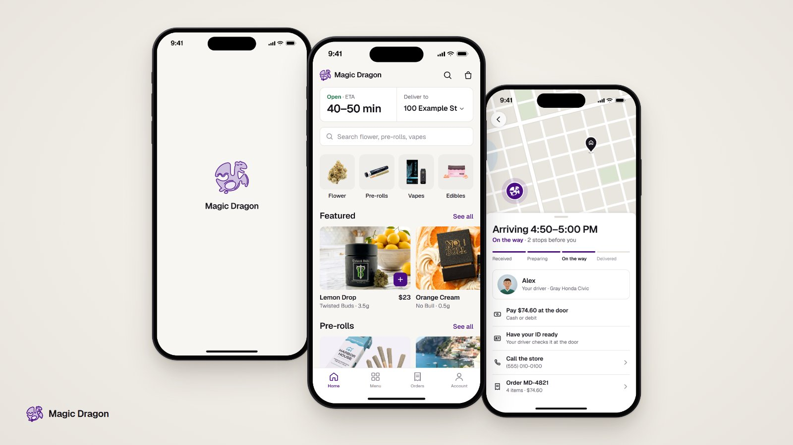
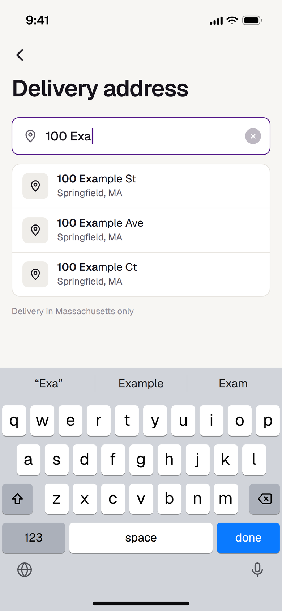
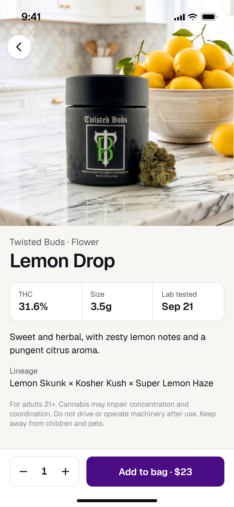
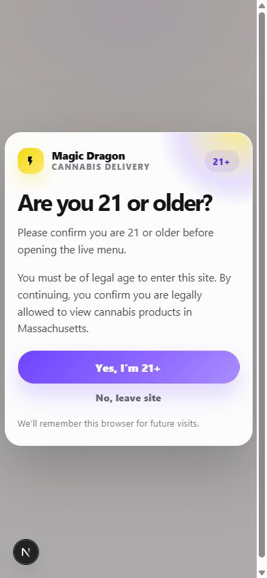
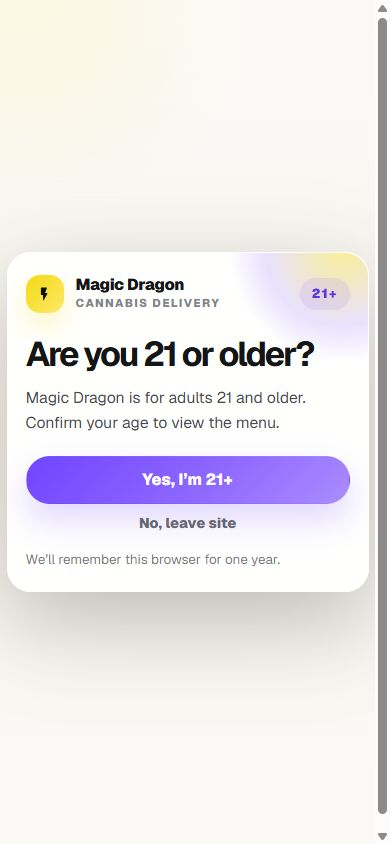
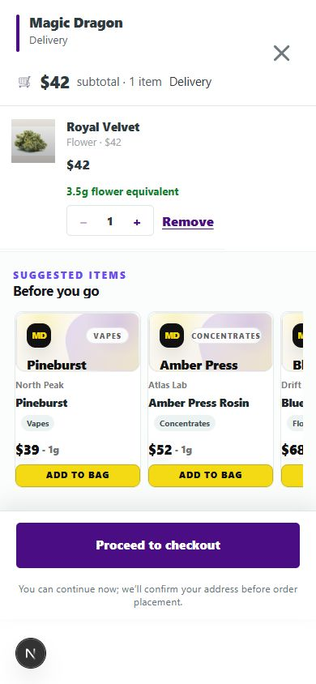
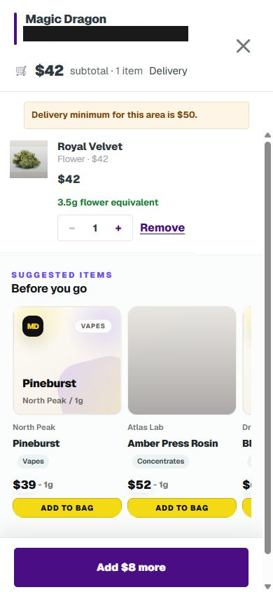
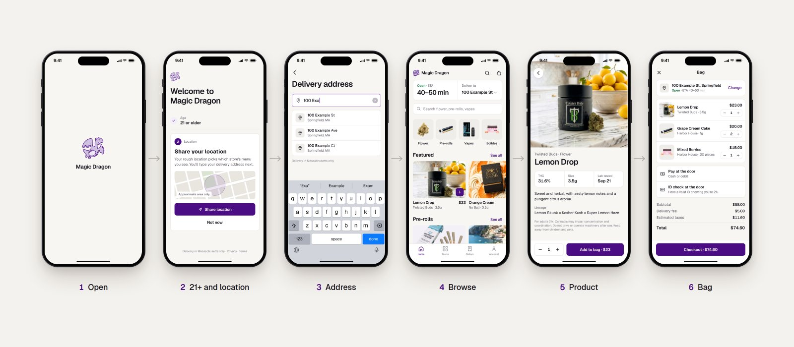

Magic Dragon: ordering a regulated delivery from your phone
Magic Dragon delivers cannabis to adults in Massachusetts. Every order has rules attached: proof of age, an ID check at the door, a daily purchase limit, cash or debit only, and no discounts in advertising. I designed the iPhone app so those rules feel like care, not paperwork, and so the one question every customer has is always answered: when will it get here?
- Type
- Real product, 2026
- Platform
- iOS first, plus the mobile website
- My role
- Founder and design lead: product decisions, flows, UI, motion, Figma system
- Scope
- 24 screens, 4 flows, 194 prototype links, a Figma system

The problem
Ordering delivery on a phone is a solved pattern. Ordering a product the state regulates is not. Three constraints shaped everything:
- The platforms disagree. Apple allows licensed cannabis ordering in apps limited to legal areas. Google Play bans it outright. One codebase had to give iPhone customers a native app and Android customers an installable website, without designing two products.
- The state sets the copy. Massachusetts limits cannabis advertising, so the usual levers (discount banners, promo tabs, "deals for you") are off the table. The interface has to sell with clarity and photography instead.
- Every order meets a person at a door. A driver checks ID and collects payment. Customers want to know exactly when, and other customers on the same route deserve privacy.
Goals
Always answer "when"
A delivery time on Home before anything else, and a live, honest one after ordering.
Ask once, for the right thing
Age and location up front in a single step, and nothing more until it's needed.
No surprises at the door
Payment, ID and the total are settled in the app before the driver arrives.
Protect everyone on the route
Show customers their driver only when it helps them, and never anyone else's stop.
Key decisions
Loading becomes the brand moment
The app's first second used to be a rocking logo on a gradient while the menu loaded. Now a pen draws the dragon while the store's menu comes in. The head comes first, so it reads as the dragon almost immediately, the closed eyes are drawn last, and a soft lavender fills in under the lines. That tinted line drawing became the logo: it sits lighter on a white screen than the old solid purple mark. If the menu is slow, the lines fade back and redraw calmly instead of showing a spinner, and when the data arrives the pen finishes from wherever it is. It never jumps. With Reduce Motion on, the finished mark appears without the drawing.
Age and location in one step
Two questions every customer has to answer go on one welcome screen: are you 21 or older, and roughly where are you? The phone's rough location, rounded to about a kilometer, only decides which store's menu to show. The exact delivery address is typed later, when it matters. "Not now" never blocks anyone: they type an address and carry on.


Lead with when, not deals
With discount banners off the table, Home leads with the most useful fact instead: the shop is open and an order arrives in 40 to 50 minutes, next to the delivery address. Below it, real product photography does the work a promo banner would, and "Order again" puts last week's order one tap away.


Product pages answer three questions
How strong is it, how much is it, and was it tested? THC, size and the lab-tested date sit in one row under the name, with the state's safety warning in plain text below. The add button carries the price, so the total is never a surprise.

The bag settles what happens at the door
Before checkout, the bag says how the driver gets paid (cash or debit) and that they'll check ID, with the estimated total. Customers who know that ahead of time aren't caught without ID or cash when the driver arrives.

Tracking that protects everyone on the route
A driver carries several orders at once. Showing a live map from the moment they leave would show customers where other people live. So tracking leads with the delivery window and a simple count, "2 stops before you", and the map appears only on the last leg. It shows the driver and your home, never the route or anyone else's stop. If the driver's location goes stale, their marker fades and says when it was last seen, so it never looks live when it isn't.
A driver marker you can recognize
The driver appears as the dragon in a purple badge. In my first version the dragon filled the badge and crowded its white ring, so at map size it lost its shape. A smaller dragon with clear purple around it reads at a glance on light and dark maps alike.

Edge cases get designed, not left as errors
A closed shop says when it opens and keeps the menu browsable. An order problem says what happened and gives the next step ("Call the store"). Declining location just means typing an address, and Account offers a quiet way to turn location on later.


Deleting an account without losing what the law requires
Apple requires in-app account deletion. The state requires keeping records for age checks and product recalls. Delete account erases email, saved addresses, favorites and marketing consent, and keeps only name, phone, date of birth and past orders, never used for marketing. The screen says exactly that, in two short lists, before anything happens.
The same care on the website
Android customers order on the website, so the order page got the same treatment. The old confirmation stacked a headline, a check mark, a yellow notice and a gray summary panel. The redesign leads with the same live status card as the app, then one card of order details and a single next step.

Earlier in the year I led a polish pass on the storefront before launch. A few of the changes:
- The age check went from two paragraphs of legal text to one sentence, and the server stopped sending the menu until it's answered.
- Minimum-order warnings stopped being vague and started saying exactly how much more to add.
- Placeholder lab results stopped appearing as if they were real. With no real lab data, the page shows nothing rather than something that looks official.
- Checkout became safe to tap twice: a repeated order returns the one already placed instead of creating a second.




The journey

Try it
Every button works. On a phone it fills the screen.
The Figma file
The Figma file has every screen as editable layers, wired up as a clickable prototype, and built on a small design system:
- Color variables for surfaces, text, brand purple, the add-to-bag yellow and status colors.
- Text styles in Geist, from the delivery-time display down to the fine print.
- Components with variants: Button (style and state), Chip, Product card, Add and stepper, the four-step order progress, Driver card (live, updated, last seen), Driver badge and Tab bar.
- Sections for onboarding, shopping, account, orders and tracking, and edge cases, each frame annotated with the reasoning behind it.
- A motion page with timing specs for the drawn dragon, the open-now pulse and the driver marker.

How I worked
I run Magic Dragon, so every decision here was mine to make and mine to live with. I set the rules, flows and copy, and used an AI coding assistant to build them into the real app and into this prototype, which made it cheap to try a screen, look at it on a phone and change it the same day. The driver badge went through that loop twice before it read clearly at map size.
Results and what's next
- Real numbers go here: orders delivered, repeat customers, support contacts about "where's my order".
- The iPhone app is in pre-release; the website serves Android and desktop customers today.
- Next, I'd measure how often customers open tracking before the last leg, whether the stop count reduces "where's my order" calls, and how many first orders finish without anyone tapping Not now.
Product names, photos and prices are from the live menu. Customer names, addresses and phone numbers are made up.